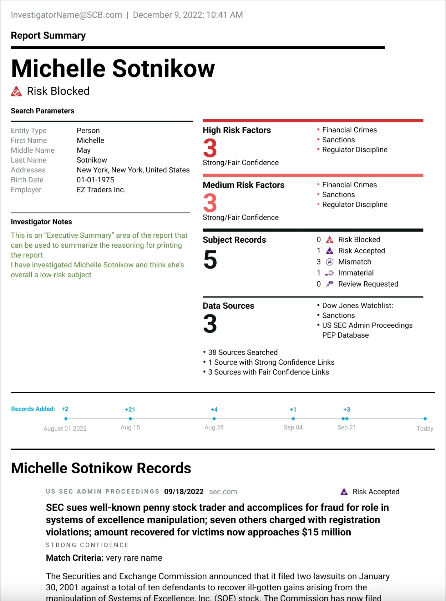
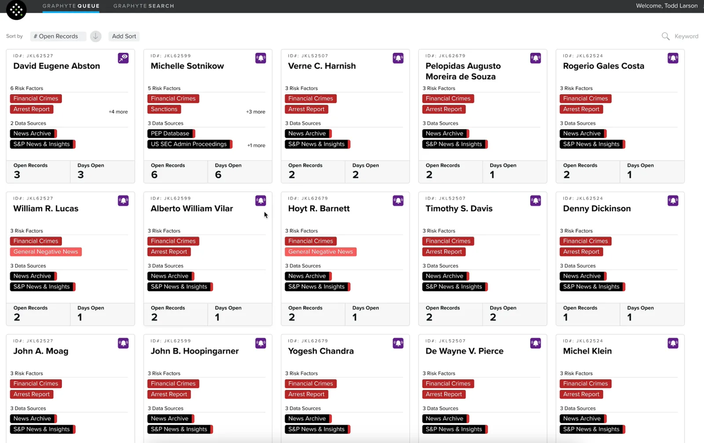

GraphyteQueue Redesign: Quantifind
I Designed & Delivered one of Quantifind's key products. I gathered requirements, created visual comps, and wrote JIRA tickets, working with the dev team on daily calls to refine specifications.
Animated portion of Quantifind's GraphyteQueue and Report Generator functionality.
Project Overview
GraphyteQueue is a core product at Quantifind, used by analysts to investigate and visualize connections between individuals and companies. It enables users to uncover complex networks and trace the relationships and activities that define risk and influence.
The Challenge
While the tool was powerful, the existing interface lacked visual clarity and responsiveness, limiting its usability across devices and workflows—particularly when analysts needed to present findings to stakeholders in a concise format.
My Role
I led the UI/UX redesign, focusing on two key goals:
Improved Responsiveness and Visual Clarity:
I restructured the component system to be fully responsive, ensuring the application performed consistently across different screen sizes. UI elements were redesigned for better hierarchy and readability, making complex network data easier to interpret.
Executive Summary Export:
I designed and implemented a printable, shareable profile view. This new 'executive summary' feature allowed users to generate a clean, one-page overview of an individual’s network—ideal for reporting and briefing scenarios.
Impact
The redesign significantly enhanced user experience and workflow efficiency, particularly in collaborative and reporting contexts. The responsive component system also laid the groundwork for easier future development and feature expansion.

